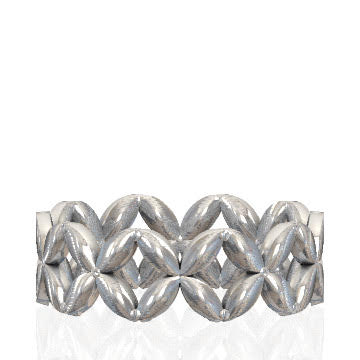

To create an interesting pattern, besides using Descartes theorem we can also use the Fibonacci sequence. The Fibonacci sequence is named after 12th century Mathematician Leonardo Bonacci / Leonardo of Pisa. He is most well known for introducing arabic numeral system (that we also use nowadays) to western europe and for introducing the concept of fibonacci sequence in his book Liber Abaci
The fibonacci sequence can be defined as a sequence in which each number is the sum of the two preceding ones. Some of the few first Fibonacci sequences are: 0, 1, 1, 2, 3, 5, 8, 13, 21. We can use the following formula to define the Fibonacci sequence.
\(F_0 = 0 , F_1 = 1 \) , and for n > 0:
\(F_n = F_n-1 + F_n-2 \)
Geometrically, the Fibonacci sequence can be used to create a spiral. In the image below, we will create a Fibonacci spiral decorated with Batik Kawung as shown in figure below. Each Batik Kawung leaf’s radius follows a fibonacci sequence. The leaf in the centre has radius 21, the next one has radius 13, the one after that has radius 8 and so on


How to Draw
-
Start with square ABCD, where the side length is equal to F(n). Begin by drawing a quarter circle centered at C, and then proceed to draw another quarter circle centered at A.
-
Next, shift your attention to square BEFG, featuring a side length equal to F(n-1). Here, create quarter circles centered at both E and G.
-
Advance to square JFHI, characterized by a side length equal to F(n-2). Draw quarter circles centered at J and H.
-
Continue this pattern by repeating step #3 for all subsequent squares in the sequence.
Application
Presenting the Kawung Ring by The Geometry of Batik Team. With the mathematical model in hand, creating a 3D model becomes a straightforward process. The resulting 3D model serves as the foundation for crafting this necklace using the lost wax casting method in our exhibit